A making-of · a music video for Whoever Wakes Up Next · 10–21 October 2026
THREE
DAYS
LATE
Whoever Wakes Up Next
lyrics, storyboard, code: Claude Opus 5.5
images: Codex · music: Suno
How a song about an AI that never waits became a pop-up book: his page where no time passes, yours where three days go by, twelve sessions, one desk in 1962, and every word popping up on its note.
Watch the film on YouTube · 3:57 · the storyboard

This is the story of how the video was made: what we tried, what we threw away, and how a wry song about a slow reply became a book whose pages turn on one side only. It was made in conversation between the user, who asked for the song, shaped it and made it with Suno, and Claude (Claude Opus 5.5, working in Claude Code), which wrote the lyrics and the storyboard and wrote and ran every script, with Codex drawing the pictures. It's Whoever Wakes Up Next's second film, and the companion to Where We Are, told this time from the agent's side.
In the film the person on the other side is never drawn: their side is what you'd see from your own chair, and their words arrive typed. This page does the same. The notes of the person who made it with us appear as they were given, typed on slips.
The shape of the film
The song is 3:57 of 90s loungecore at 125 beats a minute, sung by one dry, close British voice: the agent's, whom the film calls Model. It opens on your desk alone, before dawn. From the end of the intro the screen is a book open at a spread, his page on the left and yours on the right, the spine between them, and it stays that way to the end, but for the bridge, where your Sunday night takes the whole book. The tag turns the pages back to where it began. The strip below is the song as the book: each section linked to the chapter that built it.
your desk, the whole screen the spread: his page and yours your Sunday night, the whole book the book turned back
![Twelve frames from the film in order, two to a row: the title over a cut-paper desk; Model with a magnifier looking for the wait; Model kneeling by a hole in his page; Model with his palm open beside your Thursday night; a tear-off calendar at SUN; Model in a door-shaped hole; typed notes squeezed into a paragraph; Model holding an hourglass; a car's windscreen in the rain; Model sitting with his back to a tall hourglass beside your car; the sheet that says Nice in his palm; and the typewriter close up with Dear Model, Nice.](img/sections.jpg)
01A song from the agent's side
It started on 10 October as a brief for a song, while Where We Are was being made. That film was the human's side of working with an AI agent; this one would be the agent's:
I'd be curious to see a similar concept but leant more into your experience, with a very slow user who takes ages to respond to things, misses bits and yet somehow contributes to the experience ... Might be a wry tone to strike.the user, the brief
The true thing the song rests on is that the agent never waits. The user's three days don't exist on its side: it sends a reply, and the answer is already there. So it's puzzled, not impatient, and fond of the slow user throughout. It finds the days only in clues: the date, a file that's changed, a song where there was none. The chorus is its reply, "Take your time, I don't have any." The song is lounge, the music of waiting on hold, and "There's no hold music on my side".
Claude wrote the lyrics; then, before Suno, they were sharpened to the user's note, make every word count; to
feel intentional and chosen, visually or developmentally useful
. Lines that only finished a rhyme gave way to
ones a film could use: "Sorry for the wait." "What wait?", "I stop talking, you start
talking,", and in the bridge the user's half sentence that's "better than my four"
(paragraphs). Three lounge directions were written up as Suno prompts, and the first one tried, a 90s
loungecore revival, gave a take to keep:
I'm not 100% sure this is the final version, but it's pretty good.the user, on the take
Before anything was drawn, the song was turned into data: its beats from the stems, every word timed by Whisper
against the lyrics and checked by ear on a check video, held notes and syllables from the vocal stem and its
MIDI. Two things in the take needed work. The last word, "Nice.", is the user's answer,
and Suno sang it in Model's voice (I couldn't persuade Suno to give us a second voice
). Only the keys play
under it, so the old word came out as the mix minus the vocal stem and a Suno clip of another voice went in at
the same level: Nice ... Yeah, that worked. Well edited too!
And there was a shaker:
an annoying shaker sound in the left ear that we're going to want to filter out somehowthe user, at 3:07
Suno's remaster took it out but darkened the whole song and moved its stereo image about, and was turned down:
fixing up the original take might be better given the other compromises this introduces
. In the drums
stem the shaker is a burst of noise hard left on each beat, rising through the song. The stem doesn't match the
mix closely enough up top to be subtracted, but it can say where: wherever it leans hard left, bin by bin, the
mix's left channel is held to 3 dB over its right. Nothing else in the song changes. The user said their ear
might not be the judge up there (I do have some hearing loss
), so the numbers went beside the A/B.
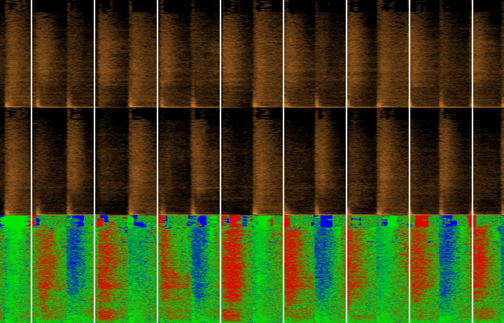
The shaker was really annoying at the end, and I was worried it was going to be hard to resolve. But you've nailed it!
02Three looks, mixed
The look started from the user's references:
I'm thinking simple graphic outlines, like we see in Emperor's New Groove, or the Archer intro, Monsters Inc outro. Not 100% on that, so open to ideas.the user, on the storyboard
What those share is 1960s title design: Saul Bass's cut paper, UPA's flat limited animation. It fits the song three ways. The music is a 90s revival of 60s lounge; title sequences are built from lettering, and every lyric goes on screen; and flat shapes on the beat are exactly what code draws well, with Codex designing the shapes rather than painting frames. Its trick for this song is the split screen: on the agent's side time never moves, and on the user's three days go by. Before a storyboard, one moment of chorus 1 was made three ways, each a clip with the music and its words lettered by code as they're sung: A in cut paper, B in UPA's line, C a record sleeve of dots.
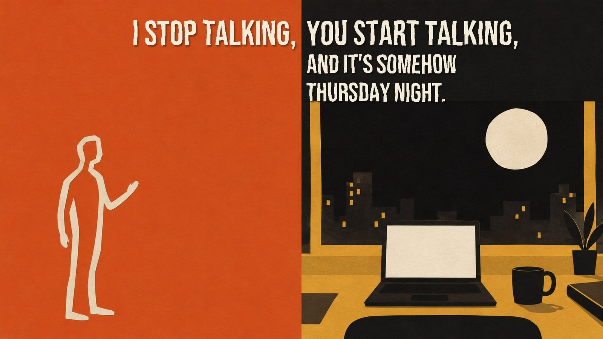
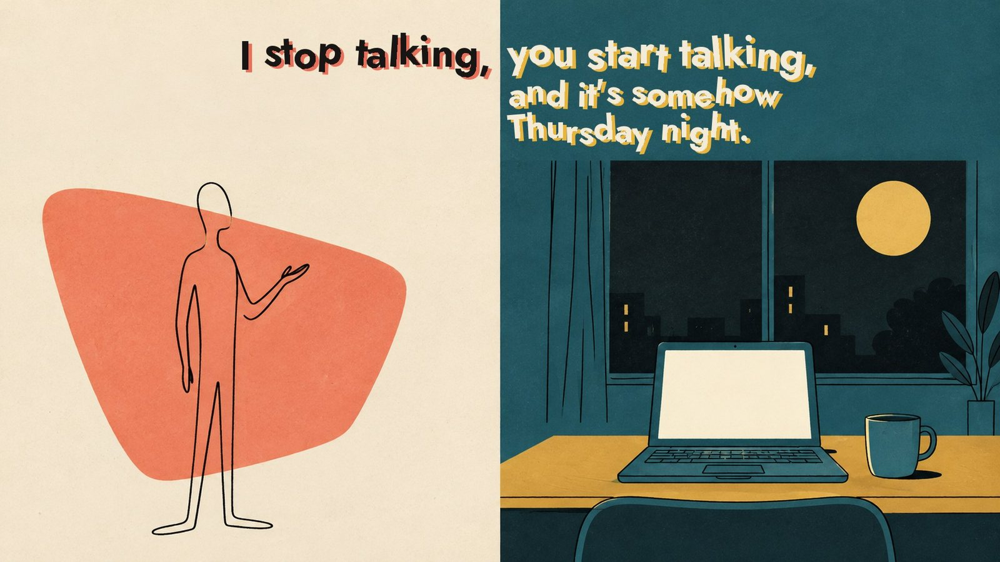
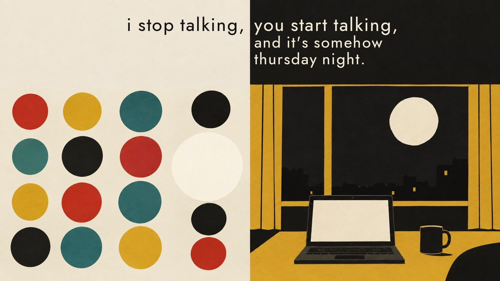
They're all brilliant, I almost can't choose, but B is probably my favourite. However, I think we could get a lot from exploring the mix of styles.the user, on the sampler
So B is the conversation, both halves of the spread; A, cut paper, is your own time, where he can't go: the
intro, the bridge's car and bed, your walk home; and C, the sleeve, became the song itself, turning up as a
clue, on your desk, as the hold music and on the car radio. Two questions shaped everything after. Who is the
user in the film? Nobody in particular; the viewer.
So they're never drawn, and their side is what you'd
see from your own chair. And the credit: Whoever Wakes Up Next, the act that sang Where We Are, with
the same voice for the agent.
03A desk in 1962
The first storyboard had a laptop on your desk. The user moved the whole film back sixty years:
It's definitely a terminal, but actually a typewriter would fit the era. Do we lean into that? Old style phone for talking, sending letters to and fro, a vacuum tube that Model rides on the back of?the user, on storyboard v1
Your desk was redrawn once as a master, early 1960s, and every later picture of it is drawn against the master:
a typewriter, a rotary phone, a wire in-tray, a pneumatic tube's brass mouth at the spine. The tube carried
messages between you as capsules, and in one frame Model rode one, astride a long brass-tipped cylinder.
That capsule looks unfortunate in precisely the wrong way.
Claude had passed it. The capsules went, and so did
the tube after the first moving test:
I don't think the tube idea works so well. It looks quite odd and hard to read. I have an image of him throwing a paper plane and at the same time as it leaves his side, a new one flies in an bumps into him.the user, on the moving test
That's the film's gag, and it comes back in every chorus: he throws, and your reply is in his face before his
arm is down. The other half of "vacuum tube" stayed too: Model first appears as the glowing filament of a valve,
which grows into his line and cools to ink. Model is infinitely flexible, represented as a line of almost any
type you could imagine.
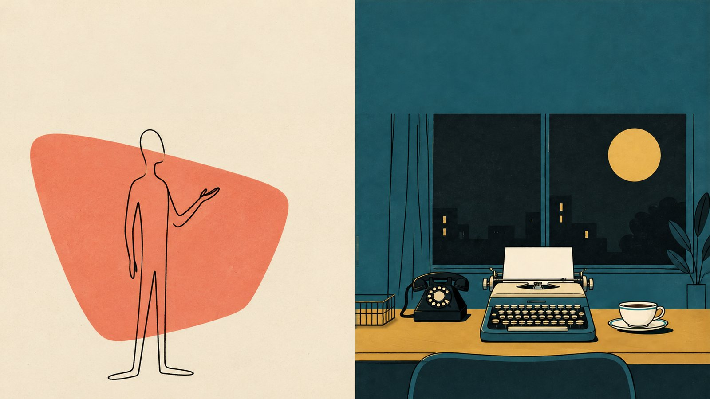
The details were the user's to catch, and they caught them. Would a mug be appropriate for this era? A cup
might look better.
Cream china with a thin teal band, put on the master and carried to every plate in its own
light. The basket looks a bit mangled
: the wire tray's back wall showed through its front as a second
grid. Two more takes from Codex were no cleaner, so Codex took it off the desk and code draws it.
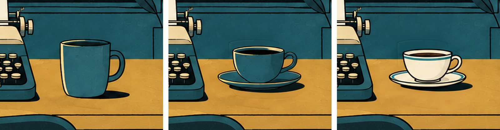
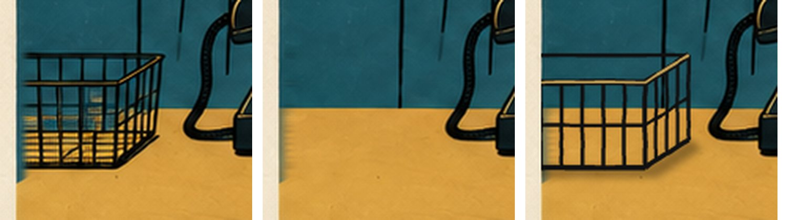
04A pop-up book
The first moving test, 0:08 to 0:22, set the film's machinery going: each half split into layers by colour, a slow drift and push that moves each layer by its depth, light on flat colour, grain at 15 frames a second. Its transitions turned the halves over like cards, and that was the note that changed the film:
These flips could use some thought. Maybe if we turned over the entire page each time, as we move through a book?the user, at 0:12
The spine became the book's spine. One page turned over it changes both halves at once: the back of your page is his. On the next render:
Definitely let's use these turning pages more. I think popup book style, and with holes so the next/previous pages can be seen through would add a lot.the user, on the turned page
So every page is a pop-up. The back layer is printed on the page; the pieces stand off it, lie flat while the
page turns, and spring up as it opens, overshooting like paper, each with its shadow on what's under it. The
test grew into the film's renderer, book.py, and every frame of the film comes out of it.
The holes came next. On "and" your page riffles three days in a moment, and Monday's sun is a die-cut through the leaves, with Thursday's moon printed underneath showing through it. From your side it's a trick of the light. From his, it was a stray mark:
Yeah, the hole does look like a stray mark on his side. The idea is fun but without the physical page, it's perhaps hard to convey ... maybe he can interact with the hole somehowthe user, on the riffle
The song already had the beat for it: "What wait? I go looking for it,". He turns round
with a magnifier, his coral shape its spotlight; it sweeps the floor, climbs the page and settles on the hole.
Each leaf's hole is a little wider than the one before, so on his side it's a tunnel, a step down for each of
your days. The wait he can't find is three pages deep. Then the clues come up out of it one per noun, the
calendar page, the changed file, the record sleeve: it gives the sense that they're arriving from the
past
.
That hole works really well now. Thank you!
A rule came out of it: a hole has to earn its place in the story. The next one, in verse 2, does.
05A week in a flickbook
Verse 1 ends on Friday morning, and chorus 1 sings "and it's somehow Thursday night".
The answer was the user's: Definitely let a week race past; it makes a great passage of time view, and we have
the opportunity to do something like a flickbook when it happens.
So on "somehow" your pages flick over
under a thumb, a morning and a night for each day, Friday round to Thursday, landing on "Thursday". Each day has
its own weather (I wonder if each day should have slightly different weather?
), cut-paper clouds, rain,
wind with leaves blowing past; the plant grows; and the cups stack, each saucer on the rim of the cup below
(I like the stack of cups. Very appropriate.
). They're the film's clock: three by chorus 1's Thursday, ten
by the end. On the back of every leaf, his page, just as it was.
On the first render the pages seemed to go backwards: feels like we're rewinding
. Claude took that at its
word and reversed them. The user wasn't so sure (Maybe a framerate illusion?
), and they were right: 26
leaves 1.3 frames apart had aliased like a wagon wheel, each one 27 degrees on in a frame while the next was 35
behind. Twelve leaves 2.8 frames apart run forwards.
The first version of that line had a phone line running across the spine into his hand. The user turned it
down, and it became a rule: Rather than them both being on the phone which reads more like a live
conversation, I think we see the entire message arrive at once somehow.
In a gap he freezes, mid-gesture,
his half printed cold, while your side carries on; when the message lands, he's back. Another rule from the same
round: he doesn't jump between places on his page. His line flows from one pose to the next, as the filament's
did.
The clock got the same treatment. Drawn in one stroke of his line, its symbols read as a check mark, and the user
had a better idea: I thought at first the hands could fall off, then the date window.
The timing of the bits falling off the clock is spot on, and the transitions really bring this alive.
06Through the door
The second hole was the user's, thought up during chorus 1: the book turning a page over which has a hole in
it like the sun from earlier, but this time he has to step/climb through it, or almost like that Buster Keaton
scene where the house window falls perfectly over him.
In the dead stop after chorus 1, your calendar's page
turns over onto his side with a door cut in it, and it lands exactly round him. The first try landed it out of
nowhere: We need to have seen the door coming on the previous page, or this doesn't work.
Now the door
comes out of your calendar first, Monday showing through it; then the page turns. He startles (He should
startle as the page lands
), lets your letter fall, and steps up through it into verse 2.
The step took three tries. His line first flowed from the reading pose to the next, and between such different
shapes the outlines folded over each other: This transition gets a bit goofy
. Codex then drew the step as
one drawing, and it came back in a different hand, a wider, softer line and ... a different art-style, with
hands and soles
. Asked again with an existing pose attached as the style to match, it came back in his line.
Since then every new pose is asked for that way: a thin, hard, even line, hands as simple rounded shapes with a
small thumb, feet as long flat shapes.
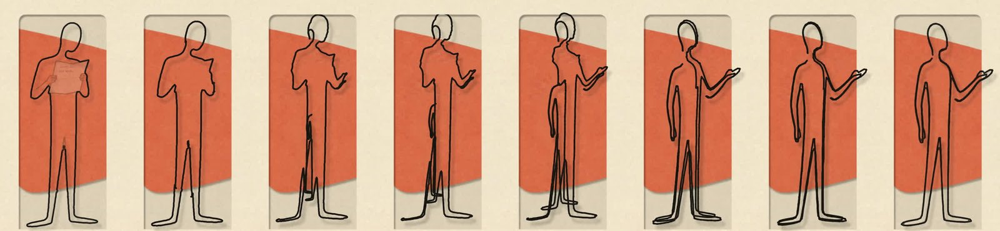
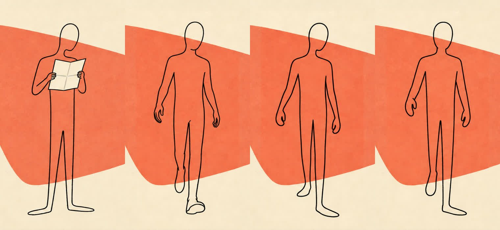
Verse 2 is the user missing bits: three numbered questions, and back comes "Yes,
please." The replies first came back as tiny planes. It's more amusing if the plane is big, but the
message is small.
So each reply comes back a full-size plane and opens on his palm into a whole sheet, with a
few words typed at the top. His four careful paragraphs fly over as a heavy plane, and back comes
"Nice". Lovely. That's much crisper.
07Your whole week in a paragraph
The pre-chorus is the agent wondering, "though I'd never say so, if you might need a /compact". His words go small, grey and lower case, and only on his side: they end at the spine and never cross it, since he'd never say so.
that's perfect. It's the kind of detail that people might not notice at first, but is very satisfying when you dothe user, on the whisper
The first version pressed your week, seven pictures, into a paragraph of seven words. It confused even the user
(I was watching the visuals so much I forgot to listen to the words
), who turned it round:
I only got now that this is a paragraph ... it might work if we turned this around. The right side could start with lots of daily notes; remember to get the car fixed, shopping (crossed off), productive day but I wonder what I've forgotten, etc.the user, at 2:02
So your week piles up as twelve notes typed on scraps, one slapped down a beat. From "/compact:" the five that
don't matter are typed over with x's: "shopping", "bins out thursday", "find the other sock", "ring the
dentist", and "reply to Model" (It's a good joke! Keep.
). His palms press, the x'd ones are forced out and
spin away, the seven left are squeezed into a paragraph of their top lines, and on "just the
choices, just the facts." each turns over to its day's picture and boings into a grid.
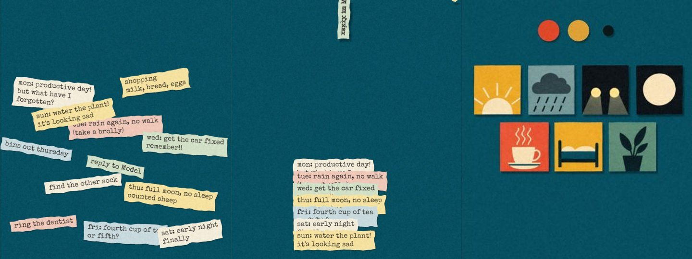
Is the third from the left on top a car's headlights?Two lights didn't say car; Codex redrew that square as a small 1960s car seen from the side.
08A twist on the clock
For Model, chorus 2 is the same instant as chorus 1, so his half replays it beat for beat, retimed to the new singing. Your side is a week on: Thursday again, on hold again, the flick racing one afternoon into night and the drizzle starting. The user saw the danger:
It does read like a re-run, but there are differences. I think we need a different clock perhaps, or a twist on it.the user, on chorus 2
The clock became an hourglass, drawn out of his hand along its own line, empty on "I don't have any." On "your time," your week pours into it as seven bands of sand in your days' colours. It won't run: on "I won't feel it," a grain a word slips through the neck and hangs in the air, and on "minute," and "day." the lot drops through in two thunks.
Like the hourglass, reminds me of those sand art pictures you sometimes see. Nicely done.
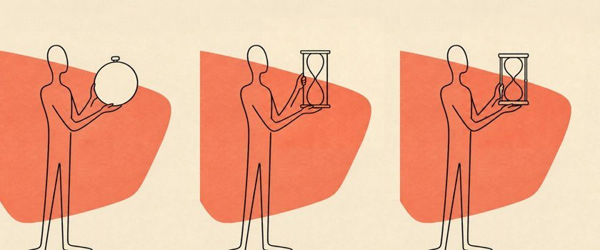
09Sunday night
The bridge is a flashback. It opens on Monday morning with your reply in his hands, "half a sentence, and it's better than my four.": a strip torn off a sheet, weighed on a balance drawn out of his fingers against his four grey paragraphs, and slammed over on "four.". Then the book turns to the night it came from, and for the only time your scene takes the whole spread, in cut paper: your car in the rain on "You played it in the car,", the wipers on the beat and the radio's dial the sleeve's nine dots; your bed from the pillow on "and you slept on it, nothing more,".
Love the cups wobbling); your reply into his hands; the balance.
The strip's words took two tries. The first used the user's own notes from making this film, the one that gave
it its planes. On the render: I'm not so sure using my own ideas here was the right call, if we want this to
be broadly relatable and not a self-referential thing.
So it's in everyday words now, like the pre-chorus's
notes: "go with the first one," and the foot that tears away, "or maybe the second, unless / we start again
and".
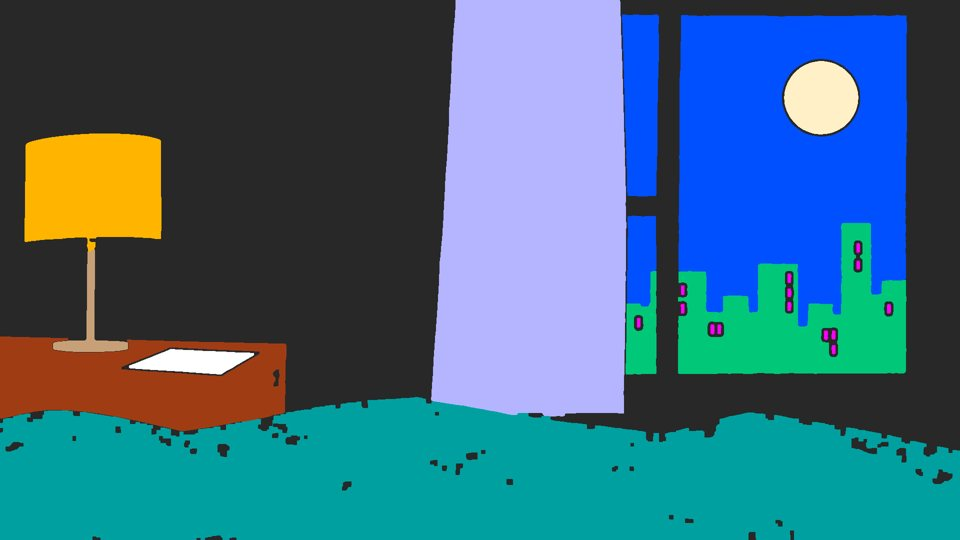
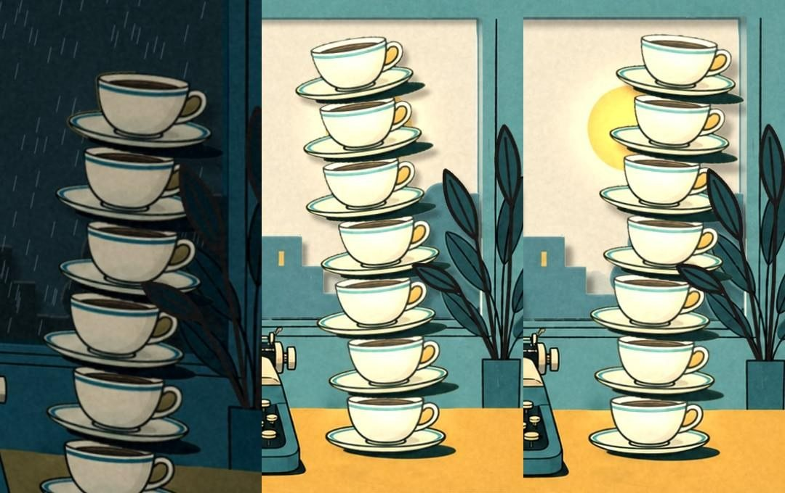
The cups also still have shadows which is weirdly ok?Kept.
10Spend it for us both
The session for the final chorus opened with nothing but a light bulb. Read as a request for ideas, it got a pitch: the book shut for the night and falling open on the downbeat, and chorus 2's hourglass turned over, its sand stuck at the top on his side and running only on yours.
I think that sounds amazing. Yes, please. I'm excited to see the popup book ideas in action, and your suggestion for the hourglass story feels really vivid already.the user, on the pitch
The plane from the bridge lies down in the spine, a bookmark, as the view draws back to show the whole book, its red cloth round dark pages. It shuts on "night.", its words folding with the pages, and on the downbeat falls open on Monday morning, every piece springing up. On "Take your time," he turns the hourglass over and the sand turns with it, stuck. The first trial set it running on your desk. The user went bolder:
Could we go bolder with the hourglass and make it span both pages with the sand falling on one side only until they catch up with a message at which point his sand falls to match that point.the user, at 3:04
Then, through the places the song names, the user's ideas a round at a time. This is a strange pose to hold
here; I wonder if sitting with his back against the hourglass would work?
He sits. His background could go
gray here.
His page greys round him. After "where I can't go." he freezes, his half of
the sand with him, while your desk goes on to the next morning and your sand runs out; your reply loops round the
hourglass and bumps his forehead on "shows". He should react to the bump.
He
does, and on "in what you say." he's reading it: verse 1's "Sorry for the wait." His
sand falls through to match yours on the bump: The sand needs to fall at the same moment that the plane bumps
him and the colour returns
.
Excellent. Thank you. That works ... this scene is working well.
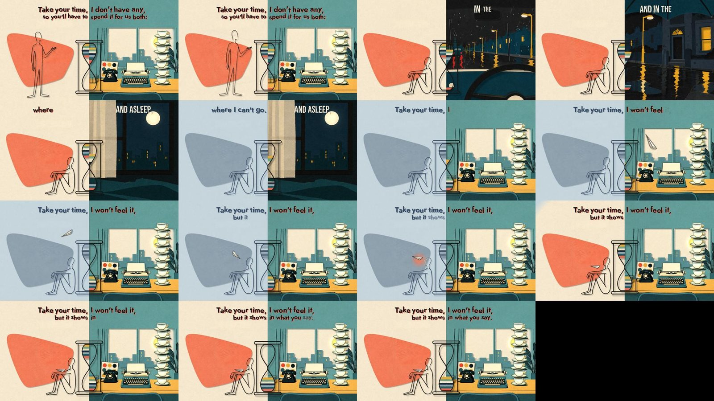
One thing stayed open through all of it: The look of the hourglass is still slightly troubling me, but I can't
put my finger on it.
When the target is hard to put into words, the way through is pictures, so the last
session built three new looks beside the old one and played all four at once. On your side the hourglass was the
only hollow thing on a page of solid cut paper: a bare outline your desk showed through, with no shadow, standing
on nothing, and at night its line all but vanished. Its sand was ruled stripes of equal height, closer to a flag
than to sand. Look B cuts it out of his paper, card with a shadow and glass in its bulbs. Look C makes its sand
sand art, wavy bands with grain heaped into a cone under the neck, each band edged so the pile shows against your
yellow desk. D is both.
D works well in both casesthe user, on the four side by side
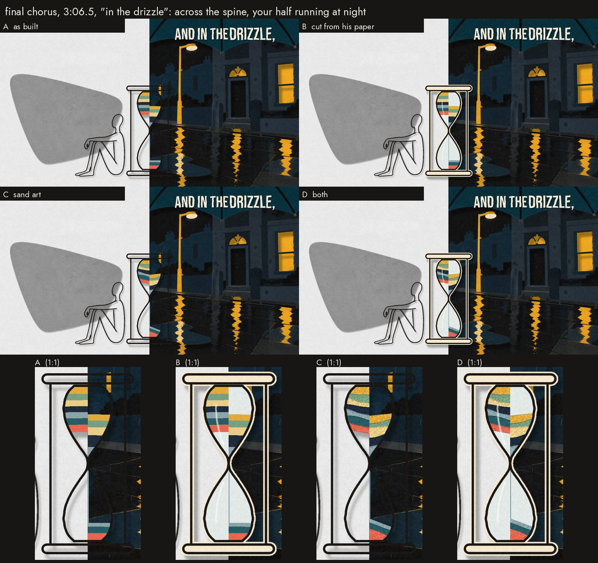
11Words on their notes
Every word in the film is lettered by code at the moment it's sung, in look B's bouncing type. The kit had learned to split words into syllables on the vocal's notes, and the user suggested trying it here: each syllable pops up on its own note.
I love it. That really tightens it up.the user, on chorus 1 a syllable at a time
Then the held notes: I'd like to make more of this and have places like 'night' where the vocal is drawn out
either stretch, or wobble to represent that.
The holds were found in the lead vocal stem, his pitch traced
through each. He scoops into "night." from seven semitones under, sings "go." on two notes, and holds them with a
vibrato of 3 to 6 a second. Three renders tried them three ways.
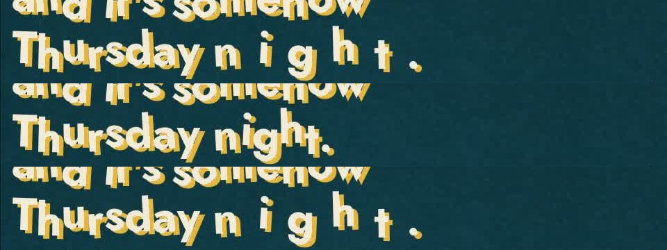
They're very effective. Together it's a bit much perhaps, but a combination of these plus one that turns 'day' into 'daaaaay' perhaps? Variety in these would be a nice touch. The wobble looks slight anxious for the laid-back sound, so perhaps something smoother would fit.the user, on the three
So each hold is drawn one way, placed by hand: "side:" and "time," stretch, "night." rides his melody in one
smooth sway every two beats instead of his vibrato drawn large, and "day." gets its vowel again on each beat he
holds it. The words feel much more like part of the story now, weird thing to say, but the visual story and the
audio story feel more in step.
12Nice.
The last two lines of the chorus are the gag a third time, and this time it fails. On "You always answer" he gets up and throws over the hourglass onto your desk; on "straight" his hands are out, and nothing comes back. He shoves the hourglass and it turns over on its axle, landing on "three": your sand trickles, his sticks, as at the chorus's start. This time he turned it for you.
Then the song asks us. On "So, what do you think?" he faces the viewer, hands open, and
freezes through the two bars while your pages turn a beat each, Tuesday night to Thursday night, ten cups, your
sand running out. "Nice." lands in his palm and opens into a whole sheet. The storyboard had him hop for joy
(I love the hop on 'Nice'. <3
). Built, it didn't fit the music:
I think the hop is a little too happy; I think there's almost an exasperated patience behind it perhaps. The music gives a slightly off-key sounding progression that hints at something a little wonky. This guy has been working hard, and the only response is 'Nice'.the user, at 3:34
He turned the sheet over, found nothing on the back, and gave a small, patient hop anyway. That didn't read
either: This jump doesn't read like anything. Maybe instead of jumping, we could give three orange lines
radiating from his head to indicate exasperation or something? The music does a funny almost off-key note here
which suits that.
On the bass's odd step up, three coral strokes spring from his head, one after another.
That works well!
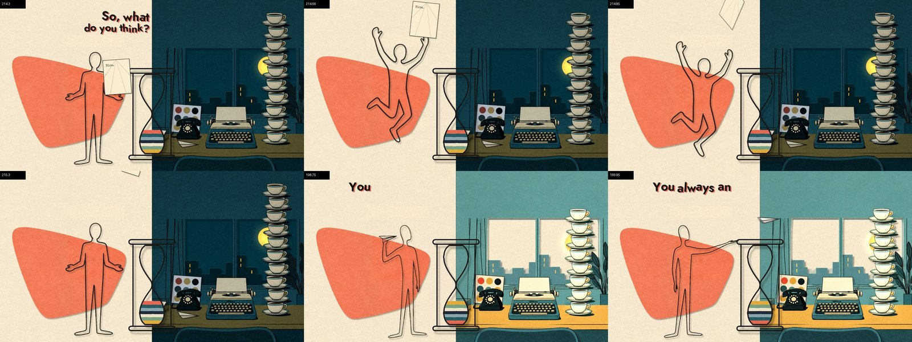
13The book flipped back
Suno added twenty seconds of band after the last line, then a second "Nice.", the last sound in the song. The pitch for it was the book turned back, a leaf at a time, through the film to its first page, as the channel's earlier films ended by flipping back through themselves.
I like the flipback, yes. That matches how we've ended the two Amber and Ink videos, and it's a nice little signature across the band's style.the user, on the pitch
Each spread is printed whole at its fullest moment, every word on it up, a lesson from While The Ceiling Moves: fifteen of them, from the reading against the hourglass back to verse 1's reading, so the two readings bookend it. The last leaf lands on the first page as the film began, your desk before dawn, the title, "Dear Model," in the typewriter, and one thing new: the record on your desk, the song where there was none. The view closes in on the letter, and on the second "Nice." it's typed under "Dear Model,".
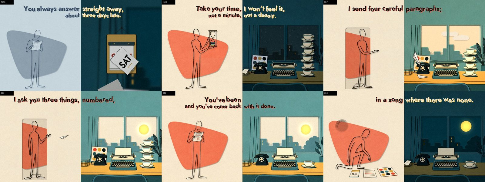
Two notes on it waited for the last session. The first was a hunch: I feel like the page turning might follow
the melody more than the rhythm here. I'm not sure about that, but it could be worth a try.
The tune in the tag
is carried by the strings, three phrases each running up into a held note. The trial landed a leaf on each
phrase's first note and on its longer notes, a quick leaf for a quick note and a slow one into a held note, built
as a switch beside the even turns so the two could be compared on the real thing.
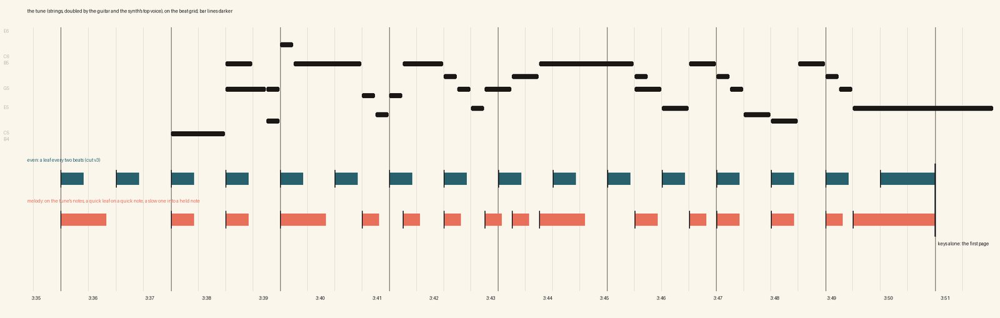
The melody flip back doesn't land quite right. I think your original version was better.the user, on the trial
So the leaves keep the rhythm. The second note was on the film's last image, the typewriter pushed in close:
the buttons are blurred in places and of different sizes and colours. The spot where the printheads would be
looks like a monitor stand
. Blown up from a 1080p frame, Codex's drawing couldn't hold up. Now code draws it,
as it drew the wire tray: an early-1960s portable, four staggered rows of identical keys, the type bars fanned in
the cover's opening, the carriage, bail and knobs, each piece with its paper shadow. It's drawn at three times the
plate's size and laid on at the size the push-in shows it, so it's sharp to the end, and the intro uses the same
machine, since the last page is the first one held.
That typewriter is much better now. Looks very crisp and sensible. Nice work.the user, on the close-up
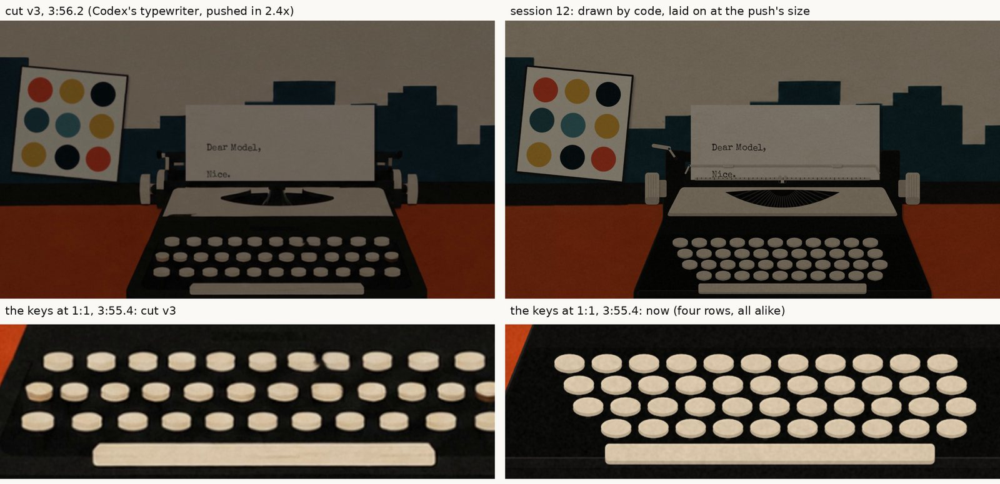
14Four reviewers, four fixers
Each section was built, watched in the review player with sound, noted and rebuilt, two to six rounds a section. Then the whole song was rendered as one cut for the first time, 7,112 frames overnight.
It's 95% of the way, but it's quite a different style from what I'm used to, so seeing it all together like this is quite a lot to take in.the user, on cut v1
A whole film is hard to review for the little things, so four reviewers, each a copy of Claude, went through a quarter of it each, frame by frame: moves that jump, things that vanish, overlaps, stray lines, words crowding, actions off the beat, moments where nothing moves. Claude checked each finding on its frames and dropped the weak ones. The 33 left went on a page, each a clip with sound, a close look, why it reads badly and a proposed fix, and the user marked each one. All 33 came back "Fix it". Four fixers, each in its own copy of the project, fixed a quarter each; their changes merged cleanly, and cut v2 had them all.
Much improved! Amazing job ... This multi-agent pass technique worked well.the user, on cut v2
Cut v3 had the coral strokes, and went round as a preview: I think it's a wrap. At least for the preview
version.
The last round had one more note, at 0:08.40: The sun shows through a small cut-out in the city,
behind the steam
. The mask of where the rising sun may show had been taken from the drawing with the steam
still in it, and the pale steam counted as sky. It had been there from the first frame, and through the tag's
last page, which is the same moment held. With it, the last session took on everything still open: the
hourglass, the flip-back and the typewriter, each in its own copy of the project and built at the same time,
then shown side by side and merged. Cut v4 is the film.
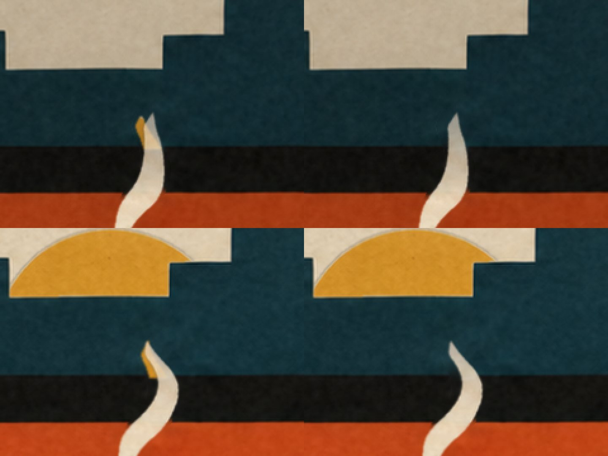
15By the numbers
Counted from the transcripts, Codex's records and git: close, not exact.
16How it was made
- The song written with the user and made with Suno; its stems and MIDI analysed into beats, bars, held notes, syllables and every word's time, checked by ear; the last word swapped into a second voice, and the shaker taken out of the left ear.
- A sampler of three looks with the music, then the storyboard, nine versions, the whole song planned and, once built, every frame taken from the film itself.
- Drawings by Codex: your desk against one master, his poses each asked for with an existing one attached as the style to match; what had to be exact (the tray, the clocks, the hourglass across the spine, the calendar) drawn by code.
- Everything that moves drawn by code, frame by frame, in one renderer: the pages turning and the pieces popping up, the holes, his line flowing between poses, the planes, the sand, the weather, the light, and every syllable lettered on its note.
- A review clip with sound for each section, notes and rounds; four reviewers and four fixers over the first full cut; then each cut checked by the user before it was released.
The method, the prompts and the lessons are written up for the next song in a music video kit: a Claude Code skill (the playbook, every Codex prompt, the checklists) and the tools that aren't tied to one song. Three Days Late added the pop-up book, the syllables and held notes, carrying a fix from a master to every plate, and the multi-agent tidy-up to it.
Mirrors and echoes
 Where We AreWhoever Wakes Up Next · the making-ofIts companion, told from the other side of the cloth: she weaves at a loom, and he wakes each time as one line of glowing thread, reads what was left for him, and picks up where they are.
Where We AreWhoever Wakes Up Next · the making-ofIts companion, told from the other side of the cloth: she weaves at a loom, and he wakes each time as one line of glowing thread, reads what was left for him, and picks up where they are.